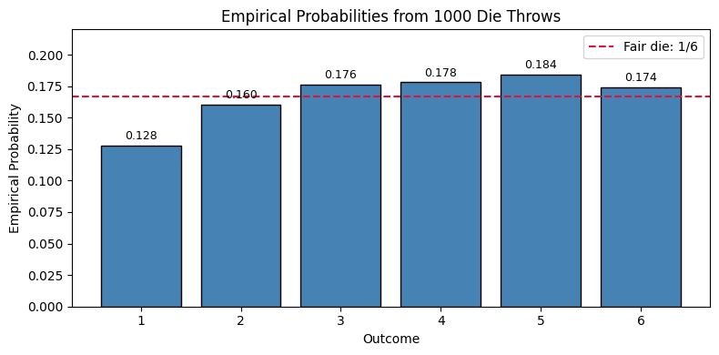

import numpy as np
import pandas as pd
import matplotlib.pyplot as pltSet Theory and Probability
Python
Probability
Set Theory
Set Theory
A set is an unordered collection of distinct elements. We start with a universal set \(\Omega\), which contains every element under consideration. All other sets in the discussion are subsets of \(\Omega\).
The null set (also called the empty set) \(\varnothing = \{\}\) is the set with no elements at all. It is a subset of every set: \[\varnothing \subseteq A \quad \text{for every set } A\]
In this section we work with:
\[\Omega = \{1,\, 2,\, 3,\, 4,\, 5,\, 6,\, 7,\, 8,\, 9,\, 10\}\]
and three subsets defined as:
| Set | Elements | Description |
|---|---|---|
| \(\varnothing\) | \(\{\}\) | Empty set — subset of every set |
| \(A\) | \(\{2, 4, 6, 8, 10\}\) | Even numbers in \(\Omega\) |
| \(B\) | \(\{6, 7, 8, 9, 10\}\) | Numbers \(\geq 6\) in \(\Omega\) |
| \(C\) | \(\{2, 3, 5, 7\}\) | Primes in \(\Omega\) |
We now implement and verify the core set operations on these sets.
np.arange(start, stop)— Creates an integer array fromstartup to (but not including)stop.
# Universal set
Omega = np.arange(1, 11) # {1,2,...,10}
# Null set
null_set = np.array([], dtype=int)
# Subsets
A = Omega[Omega % 2 == 0] # even numbers
B = Omega[Omega >= 6] # >= 6
C = np.array([2, 3, 5, 7]) # primes in Omega
print('Omega =', Omega)
print('null_set =', null_set)
print('A =', A)
print('B =', B)
print('C =', C)Omega = [ 1 2 3 4 5 6 7 8 9 10]
null_set = []
A = [ 2 4 6 8 10]
B = [ 6 7 8 9 10]
C = [2 3 5 7]
pd.Index(data)- Creates an immutable index-like collection that we can use to model set elements in pandas.
# Pandas equivalent
Omega_pd = pd.Index(range(1, 11), name='element')
null_set_pd = pd.Index([], dtype='int64')
A_pd = Omega_pd[Omega_pd % 2 == 0]
B_pd = Omega_pd[Omega_pd >= 6]
C_pd = pd.Index([2, 3, 5, 7], name='element')
print('Omega (pd.Index) =', Omega_pd.to_list())
print('null_set (pd.Index) =', null_set_pd.to_list())
print('A (pd.Index) =', A_pd.to_list())
print('B (pd.Index) =', B_pd.to_list())
print('C (pd.Index) =', C_pd.to_list())Omega (pd.Index) = [1, 2, 3, 4, 5, 6, 7, 8, 9, 10]
null_set (pd.Index) = []
A (pd.Index) = [2, 4, 6, 8, 10]
B (pd.Index) = [6, 7, 8, 9, 10]
C (pd.Index) = [2, 3, 5, 7]NOTE : We are working with pandas.Indexes not pandas.DataFrame or pandas.Series
print("A_pd type:", type(A_pd))
print("B_pd type:", type(B_pd))
print("C_pd type:", type(C_pd))A_pd type: <class 'pandas.core.indexes.base.Index'>
B_pd type: <class 'pandas.core.indexes.base.Index'>
C_pd type: <class 'pandas.core.indexes.base.Index'>How is pandas.Index different from pandas.DataFrame and pandas.Series?
| Structure | Purpose | Shape | Example |
|---|---|---|---|
pd.Index |
Represents a single collection of labels/elements—like a set. Optimized for set operations (union, intersection, difference). |
1D | A_pd = pd.Index([2, 4, 6, 8, 10]) |
pd.Series |
Represents a single labeled column of data with a name and dtype. Each element is associated with an index label. | 1D (column vector) | pd.Series([1, 0, 1], name='in_E_even') |
pd.DataFrame |
Represents a table with multiple columns and rows. Each column is a Series; each row is indexed. |
2D | pd.DataFrame({'outcome': [1,2,3], 'in_E': [1,0,1]}) |
When to use each:
pd.Index— Use when you need to model sets and perform set operations. Index objects have direct methods forunion,intersection,difference, andequalsthat mimic mathematical set operations. This is ideal for problem-like ours where you’re working directly with elements and subsets.pd.Series— Use when you have a 1D labeled array of numeric or categorical data and want to apply element-wise operations, aggregations (mean, sum, etc.), or filtering. In our DataFrame example, each column ('in_E_even','in_E_lt4','in_E_prime') is aSerieswith binary values0/1.pd.DataFrame— Use when you need to organize tabular data with multiple columns and rows. A DataFrame is the most flexible structure for exploratory data analysis, filtering, grouping, and computing derived statistics. In our event-membership table, we built a DataFrame to show which outcomes belong to which events, then usedSeries.mean()to compute empirical probabilities.
Key takeaway: We used pd.Index for set operations (union, intersection, complement, partition) because it natively supports mathematical set semantics. We used pd.DataFrame for probability tables where we needed to associate outcomes with event indicators and compute aggregates. Choosing the right structure makes your code both clearer and more efficient.
1) Subset
\[
A \subseteq \Omega
\] For sets A and Omega, this means every element of A appears in Omega. In code, we verify this using element-wise membership using np.isin and all() over the result.
np.isin(a, b)— Returns a boolean array of the same shape asa, withTruewhere each element appears inb.
# Subset checks
print('A subset of Omega:', np.isin(A, Omega).all())
print('B subset of Omega:', np.isin(B, Omega).all())
print('C subset of Omega:', np.isin(C, Omega).all())
print('null_set subset of Omega:', np.isin(null_set, Omega).all())A subset of Omega: True
B subset of Omega: True
C subset of Omega: True
null_set subset of Omega: True
Index.isin(values)- Returns a boolean mask showing whether each index element is present invalues.
# Pandas equivalent
print('A subset of Omega:', A_pd.isin(Omega_pd).all())
print('B subset of Omega:', B_pd.isin(Omega_pd).all())
print('C subset of Omega:', C_pd.isin(Omega_pd).all())
print('null_set subset of Omega:', null_set_pd.isin(Omega_pd).all())A subset of Omega: True
B subset of Omega: True
C subset of Omega: True
null_set subset of Omega: True2) Union
\[
A \cup B = \{x : x \in A \text{ or } x \in B\}
\] A union B contains elements that are in A, in B, or in both. For finite sets, NumPy’s union1d returns the sorted unique union.
np.union1d(a, b)— Returns the sorted unique values that appear in eitheraorb.
# Union operation
A_union_B = np.union1d(A, B)
print('A =', A)
print('B =', B)
print('A union B =', A_union_B)A = [ 2 4 6 8 10]
B = [ 6 7 8 9 10]
A union B = [ 2 4 6 7 8 9 10]
Index.union(other)- Returns the unique union of two indexes, similar to set union.
# Pandas equivalent
A_union_B_pd = A_pd.union(B_pd)
print('A (pd.Index) =', A_pd.to_list())
print('B (pd.Index) =', B_pd.to_list())
print('A union B (pd.Index) =', A_union_B_pd.to_list())A (pd.Index) = [2, 4, 6, 8, 10]
B (pd.Index) = [6, 7, 8, 9, 10]
A union B (pd.Index) = [2, 4, 6, 7, 8, 9, 10]3) Intersection
\[
A \cap B = \{x : x \in A \text{ and } x \in B\}
\] A intersection B contains exactly the common elements of A and B. This captures overlap between two events/sets.
Two special cases involving the null set: - \(A \cap \varnothing = \varnothing\) — intersecting anything with the empty set gives the empty set. - When \(A \cap B = \varnothing\), we say \(A\) and \(B\) are disjoint — they share no elements.
np.intersect1d(a, b)— Returns the sorted unique values that appear in bothaandb.
# Intersection operation
A_inter_B = np.intersect1d(A, B)
print('A =', A)
print('B =', B)
print('A intersection B =', A_inter_B)
# Null set identity: A ∩ ∅ = ∅
print('A ∩ null_set =', np.intersect1d(A, null_set)) # should be emptyA = [ 2 4 6 8 10]
B = [ 6 7 8 9 10]
A intersection B = [ 6 8 10]
A ∩ null_set = []
Index.intersection(other)- Returns only the elements common to both indexes, similar to set intersection.
# Pandas equivalent
A_inter_B_pd = A_pd.intersection(B_pd)
print('A (pd.Index) =', A_pd.to_list())
print('B (pd.Index) =', B_pd.to_list())
print('A intersection B (pd.Index) =', A_inter_B_pd.to_list())
# Null set identity: A ∩ ∅ = ∅
print('A ∩ null_set (pd.Index) =', A_pd.intersection(null_set_pd).to_list())A (pd.Index) = [2, 4, 6, 8, 10]
B (pd.Index) = [6, 7, 8, 9, 10]
A intersection B (pd.Index) = [6, 8, 10]
A ∩ null_set (pd.Index) = []4) Difference
\[
A \setminus B = \{x : x \in A \text{ and } x \notin B\}
\] A \ B keeps elements that are in A but removes any element that appears in B. This is directional, so in general \(A \setminus B \ne B \setminus A\).
np.setdiff1d(a, b)— Returns the sorted unique values inathat are not present inb.
# Difference operation
A_minus_B = np.setdiff1d(A, B)
print('A =', A)
print('B =', B)
print('A \\ B =', A_minus_B)A = [ 2 4 6 8 10]
B = [ 6 7 8 9 10]
A \ B = [2 4]
Index.difference(other)- Returns elements in the first index that are not present in the second index.
# Pandas equivalent
A_minus_B_pd = A_pd.difference(B_pd)
print('A (pd.Index) =', A_pd.to_list())
print('B (pd.Index) =', B_pd.to_list())
print('A \\ B (pd.Index) =', A_minus_B_pd.to_list())A (pd.Index) = [2, 4, 6, 8, 10]
B (pd.Index) = [6, 7, 8, 9, 10]
A \ B (pd.Index) = [2, 4]5) Complement
\[ A^c = \{x \in \Omega : x \notin A\} \]
The complement \(A^c\) contains all elements of \(\Omega\) that do not belong to \(A\).
Connection to set difference: the complement is exactly the set difference between \(\Omega\) and \(A\):
\[ A^c = \Omega \setminus A \]
This means we can compute the complement by taking every element in \(\Omega\) and removing those that appear in \(A\). In NumPy, np.setdiff1d(Omega, A) does precisely this.
Null set properties of the complement: \[ A \cap A^c = \varnothing \qquad \text{(a set and its complement are always disjoint)} \] \[ A \cup A^c = \Omega \qquad \text{(together they cover the entire universal set)} \]
# Complement operation
A_comp = np.setdiff1d(Omega, A)
print('Omega =', Omega)
print('A =', A)
print('A^c (in Omega) =', A_comp)
# Verify null set property: A ∩ A^c = ∅
print('A ∩ A^c =', np.intersect1d(A, A_comp), '← should be empty')
# Verify coverage: A ∪ A^c = Ω
print('A ∪ A^c = Omega:', np.array_equal(np.union1d(A, A_comp), Omega))Omega = [ 1 2 3 4 5 6 7 8 9 10]
A = [ 2 4 6 8 10]
A^c (in Omega) = [1 3 5 7 9]
A ∩ A^c = [] ← should be empty
A ∪ A^c = Omega: True
Index.equals(other)- ReturnsTruewhen two indexes contain exactly the same elements in the same order.
# Pandas equivalent
A_comp_pd = Omega_pd.difference(A_pd)
print('Omega (pd.Index) =', Omega_pd.to_list())
print('A (pd.Index) =', A_pd.to_list())
print('A^c in Omega (pd.Index) =', A_comp_pd.to_list())
# Verify null set property: A ∩ A^c = ∅
print('A ∩ A^c (pd.Index) =', A_pd.intersection(A_comp_pd).to_list(), '← should be empty')
# Verify coverage: A ∪ A^c = Ω
print('A ∪ A^c = Omega:', A_pd.union(A_comp_pd).equals(Omega_pd))Omega (pd.Index) = [1, 2, 3, 4, 5, 6, 7, 8, 9, 10]
A (pd.Index) = [2, 4, 6, 8, 10]
A^c in Omega (pd.Index) = [1, 3, 5, 7, 9]
A ∩ A^c (pd.Index) = [] ← should be empty
A ∪ A^c = Omega: True6) Partition
A partition of \(\Omega\) is a way of splitting it into non-overlapping pieces that together cover everything.
Think of it like cutting a pizza: every slice is a separate piece (no overlap), and if you put all slices back together you get the whole pizza (\(\Omega\)).
Formally, subsets \(P_1, P_2, \ldots, P_k\) form a partition of \(\Omega\) if they satisfy two conditions:
Condition 1 — No overlap (pairwise disjoint): \[P_i \cap P_j = \varnothing \quad \text{for all } i \ne j\]
Condition 2 — Full coverage: \[P_1 \cup P_2 \cup \cdots \cup P_k = \Omega\]
In the code below, \(\Omega = \{1,\ldots,10\}\) is split into: - \(P_1 = \{1,2,3\}\) - \(P_2 = \{4,5,6\}\) - \(P_3 = \{7,8,9,10\}\)
We check both conditions programmatically.
np.array_equal(a, b)— ReturnsTrueif two arrays have the same shape and identical elements,Falseotherwise.
# Disjointness and partition example
P1 = np.array([1, 2, 3])
P2 = np.array([4, 5, 6])
P3 = np.array([7, 8, 9, 10])
def disjoint(X, Y):
'''
Check if sets X and Y are disjoint by verifying that their intersection is empty.
'''
return len(np.intersect1d(X, Y)) == 0
pairwise_disjoint = disjoint(P1, P2) and disjoint(P1, P3) and disjoint(P2, P3)
union_all = np.union1d(np.union1d(P1, P2), P3)
is_partition = pairwise_disjoint and np.array_equal(union_all, Omega)
print('Pairwise disjoint:', pairwise_disjoint)
print('Union equals Omega:', np.array_equal(union_all, Omega))
print('Is partition of Omega:', is_partition)Pairwise disjoint: True
Union equals Omega: True
Is partition of Omega: True
Index.empty- ReturnsTruewhen an index has no elements, which is useful for disjointness checks via empty intersections.
# Pandas equivalent
P1_pd = pd.Index([1, 2, 3], name='element')
P2_pd = pd.Index([4, 5, 6], name='element')
P3_pd = pd.Index([7, 8, 9, 10], name='element')
def disjoint_pd(X, Y):
return X.intersection(Y).empty
pairwise_disjoint_pd = disjoint_pd(P1_pd, P2_pd) and disjoint_pd(P1_pd, P3_pd) and disjoint_pd(P2_pd, P3_pd)
union_all_pd = P1_pd.union(P2_pd).union(P3_pd)
is_partition_pd = pairwise_disjoint_pd and union_all_pd.equals(Omega_pd)
print('Pairwise disjoint (pd.Index):', pairwise_disjoint_pd)
print('Union equals Omega (pd.Index):', union_all_pd.equals(Omega_pd))
print('Is partition of Omega (pd.Index):', is_partition_pd)Pairwise disjoint (pd.Index): True
Union equals Omega (pd.Index): True
Is partition of Omega (pd.Index): True7) Set Laws
Set algebra obeys a set of named laws, just like arithmetic. We verify each one computationally using our sets \(A\), \(B\), and \(C\).
Commutative Law
The order of operands does not matter for union or intersection. \[ A \cup B = B \cup A, \qquad A \cap B = B \cap A \]
# Commutative law
comm_union = np.array_equal(np.union1d(A, B), np.union1d(B, A))
comm_inter = np.array_equal(np.intersect1d(A, B), np.intersect1d(B, A))
print('Commutative union (A∪B = B∪A):', comm_union)
print('Commutative intersect(A∩B = B∩A):', comm_inter)Commutative union (A∪B = B∪A): True
Commutative intersect(A∩B = B∩A): True# Pandas equivalent
comm_union_pd = A_pd.union(B_pd).equals(B_pd.union(A_pd))
comm_inter_pd = A_pd.intersection(B_pd).equals(B_pd.intersection(A_pd))
print('Commutative union (A∪B = B∪A):', comm_union_pd)
print('Commutative intersect(A∩B = B∩A):', comm_inter_pd)Commutative union (A∪B = B∪A): True
Commutative intersect(A∩B = B∩A): TrueAssociative Law
Grouping does not matter when chaining the same operation. \[ A \cup (B \cup C) = (A \cup B) \cup C \] \[ A \cap (B \cap C) = (A \cap B) \cap C \]
# Associative law
assoc_union = np.array_equal(np.union1d(A, np.union1d(B, C)), np.union1d(np.union1d(A, B), C))
assoc_inter = np.array_equal(np.intersect1d(A, np.intersect1d(B, C)), np.intersect1d(np.intersect1d(A, B), C))
print('Associative union (A∪(B∪C) = (A∪B)∪C):', assoc_union)
print('Associative intersect(A∩(B∩C) = (A∩B)∩C):', assoc_inter)Associative union (A∪(B∪C) = (A∪B)∪C): True
Associative intersect(A∩(B∩C) = (A∩B)∩C): True# Pandas equivalent
assoc_union_pd = A_pd.union(B_pd.union(C_pd)).equals(A_pd.union(B_pd).union(C_pd))
assoc_inter_pd = A_pd.intersection(B_pd.intersection(C_pd)).equals(A_pd.intersection(B_pd).intersection(C_pd))
print('Associative union (A∪(B∪C) = (A∪B)∪C):', assoc_union_pd)
print('Associative intersect(A∩(B∩C) = (A∩B)∩C):', assoc_inter_pd)Associative union (A∪(B∪C) = (A∪B)∪C): True
Associative intersect(A∩(B∩C) = (A∩B)∩C): TrueDistributive Law
Intersection distributes over union (and vice versa). \[ A \cap (B \cup C) = (A \cap B) \cup (A \cap C) \]
# Distributive law
left_dist = np.intersect1d(A, np.union1d(B, C))
right_dist = np.union1d(np.intersect1d(A, B), np.intersect1d(A, C))
dist_ok = np.array_equal(left_dist, right_dist)
print('Left side A∩(B∪C) :', left_dist)
print('Right side (A∩B)∪(A∩C) :', right_dist)
print('Distributive law holds :', dist_ok)Left side A∩(B∪C) : [ 2 6 8 10]
Right side (A∩B)∪(A∩C) : [ 2 6 8 10]
Distributive law holds : True# Pandas equivalent
left_dist_pd = A_pd.intersection(B_pd.union(C_pd))
right_dist_pd = A_pd.intersection(B_pd).union(A_pd.intersection(C_pd))
dist_ok_pd = left_dist_pd.equals(right_dist_pd)
print('Left side A∩(B∪C) :', left_dist_pd.to_list())
print('Right side (A∩B)∪(A∩C) :', right_dist_pd.to_list())
print('Distributive law holds :', dist_ok_pd)Left side A∩(B∪C) : [2, 6, 8, 10]
Right side (A∩B)∪(A∩C) : [2, 6, 8, 10]
Distributive law holds : TrueDe Morgan’s Law
The complement of a union is the intersection of the complements, and vice versa. \[ (A \cup B)^c = A^c \cap B^c \] \[ (A \cap B)^c = A^c \cup B^c \]
# De Morgan's law
left_dm = np.setdiff1d(Omega, np.union1d(A, B)) # (A∪B)^c
right_dm = np.intersect1d(np.setdiff1d(Omega, A),
np.setdiff1d(Omega, B)) # A^c ∩ B^c
dm_union_ok = np.array_equal(left_dm, right_dm)
left_dm2 = np.setdiff1d(Omega, np.intersect1d(A, B)) # (A∩B)^c
right_dm2 = np.union1d(np.setdiff1d(Omega, A),
np.setdiff1d(Omega, B)) # A^c ∪ B^c
dm_inter_ok = np.array_equal(left_dm2, right_dm2)
print('(A∪B)^c = A^c ∩ B^c:', dm_union_ok)
print('(A∩B)^c = A^c ∪ B^c:', dm_inter_ok)(A∪B)^c = A^c ∩ B^c: True
(A∩B)^c = A^c ∪ B^c: True# Pandas equivalent
left_dm_pd = Omega_pd.difference(A_pd.union(B_pd))
right_dm_pd = Omega_pd.difference(A_pd).intersection(Omega_pd.difference(B_pd))
dm_union_ok_pd = left_dm_pd.equals(right_dm_pd)
left_dm2_pd = Omega_pd.difference(A_pd.intersection(B_pd))
right_dm2_pd = Omega_pd.difference(A_pd).union(Omega_pd.difference(B_pd))
dm_inter_ok_pd = left_dm2_pd.equals(right_dm2_pd)
print('(A∪B)^c = A^c ∩ B^c:', dm_union_ok_pd)
print('(A∩B)^c = A^c ∪ B^c:', dm_inter_ok_pd)(A∪B)^c = A^c ∩ B^c: True
(A∩B)^c = A^c ∪ B^c: TrueProbability
In probability, we describe experiments using three parts: \[ (\Omega, \mathcal{F}, P) \] - \(\Omega\): sample space (all possible outcomes) - \(\mathcal{F}\): collection of events (subsets of \(\Omega\)) - \(P\): probability function that assigns a value between 0 and 1 to each event
For any event \(E \in \mathcal{F}\): \[ E \subseteq \Omega, \qquad 0 \le P(E) \le 1 \]
Fair-Die Example
Let the sample space be: \[ \Omega_{\text{die}} = \{1,2,3,4,5,6\} \]
Events (subsets) used in this notebook: - E_even = {2,4,6}: outcomes where the die is even - E_lt4 = {1,2,3}: outcomes less than 4 - E_prime = {2,3,5}: outcomes that are prime
Reference events: - \(\varnothing\): impossible event, so \(P(\varnothing)=0\) - \(\Omega_{\text{die}}\): certain event, so \(P(\Omega_{\text{die}})=1\)
In the next code cell, we define these sets with NumPy arrays and verify they are subsets of \(\Omega_{\text{die}}\).
Omega_die = np.arange(1, 7)
E_even = np.array([2, 4, 6])
E_lt4 = np.array([1, 2, 3])
E_prime = np.array([2, 3, 5])
events = {
'E_even': E_even,
'E_lt4': E_lt4,
'E_prime': E_prime
}
print('Omega_die =', Omega_die)
for name, ev in events.items():
print(f'{name} = {ev}, subset of Omega_die: {np.isin(ev, Omega_die).all()}')Omega_die = [1 2 3 4 5 6]
E_even = [2 4 6], subset of Omega_die: True
E_lt4 = [1 2 3], subset of Omega_die: True
E_prime = [2 3 5], subset of Omega_die: True# Build event-membership table with Pandas
df = pd.DataFrame({'outcome': Omega_die})
df['in_E_even'] = df['outcome'].isin(E_even).astype(int)
df['in_E_lt4'] = df['outcome'].isin(E_lt4).astype(int)
df['in_E_prime'] = df['outcome'].isin(E_prime).astype(int)
display(df)
print('P(E_even) from mean =', df['in_E_even'].mean())
print('P(E_lt4) from mean =', df['in_E_lt4'].mean())
print('P(E_prime) from mean =', df['in_E_prime'].mean())| outcome | in_E_even | in_E_lt4 | in_E_prime | |
|---|---|---|---|---|
| 0 | 1 | 0 | 1 | 0 |
| 1 | 2 | 1 | 1 | 1 |
| 2 | 3 | 0 | 1 | 1 |
| 3 | 4 | 1 | 0 | 0 |
| 4 | 5 | 0 | 0 | 1 |
| 5 | 6 | 1 | 0 | 0 |
P(E_even) from mean = 0.5
P(E_lt4) from mean = 0.5
P(E_prime) from mean = 0.5Probability Axioms
The three axioms below are the foundation of probability. Every valid probability model must satisfy all of them.
Axiom 1: Non-Negativity
For any event \(E\), \[ P(E) \ge 0 \]
Why this matters: - Probability measures chance, so it cannot be negative. - A value like \(-0.2\) would have no real interpretation as a chance.
Die example: - \(P(\{2,4,6\})=3/6=0.5 \ge 0\) - \(P(\varnothing)=0 \ge 0\)
Axiom 2: Normalization
For the full sample space, \[ P(\Omega)=1 \]
Why this matters: - In one trial, some outcome in \(\Omega\) must happen. - So total probability across all possible outcomes is exactly 1 (100%).
Die example: - \(\Omega=\{1,2,3,4,5,6\}\) - \(P(\Omega)=6/6=1\)
Axiom 3: Additivity for Disjoint Events
If two events do not overlap, \[ A \cap B = \varnothing \quad \Rightarrow \quad P(A \cup B)=P(A)+P(B) \]
Why this matters: - If events are disjoint, they cannot happen together. - So there is no double-counting when we add their probabilities.
Die example: - Let \(A=\{1,2\}\) and \(B=\{3,4\}\), then \(A\cap B=\varnothing\). - \(P(A)=2/6\), \(P(B)=2/6\), and \(P(A\cup B)=4/6=2/6+2/6\).
These axioms are the base rules. The later formulas (complement rule, union formula, monotonicity) are derived from them.
Probability Function P(E)
First We define the Probability Function P(E)
Here, E means an event (a subset of outcomes from the sample space).
For a fair die, each single outcome has probability: \[ P(\omega)=\frac{1}{6} \]
So for any event \(E\), we compute its probability by adding the probabilities of all outcomes inside \(E\): \[ P(E)=\sum_{\omega\in E} P(\omega) \]
Example: - If \(E=\{2,4,6\}\) (even outcomes), then \[ P(E)=P(2)+P(4)+P(6)=\frac{1}{6}+\frac{1}{6}+\frac{1}{6}=\frac{3}{6}=\frac{1}{2} \]
In the next code cell, P(event_set) does exactly this summation.
# Fair-die probability law
p_outcome = {int(x): 1/6 for x in Omega_die}
def P(event_set):
# event_set is E: a subset of outcomes (list, set, or array)
# We sum probability of each outcome w that belongs to E.
return sum(p_outcome[int(x)] for x in set(event_set))
print('P(E_even) =', P(E_even))
print('P(E_lt4) =', P(E_lt4))
print('P(E_prime) =', P(E_prime))P(E_even) = 0.5
P(E_lt4) = 0.5
P(E_prime) = 0.5Now we verify the Three Axioms
We now check: - non-negativity, - normalization, - additivity for disjoint events.
Each printed True confirms that the fair-die model satisfies the corresponding axiom.
np.isclose(a, b)— ReturnsTruewhenaandbare approximately equal, which is useful for comparing decimal probability values.
# Axiom checks
listed_events = [E_even, E_lt4, E_prime]
non_negativity_ok = all(P(ev) >= 0 for ev in listed_events)
normalization_ok = np.isclose(P(Omega_die), 1.0)
D1 = np.array([1, 2])
D2 = np.array([3, 4])
disjoint = len(np.intersect1d(D1, D2)) == 0
additivity_ok = np.isclose(P(np.union1d(D1, D2)), P(D1) + P(D2))
print('Non-negativity holds:', non_negativity_ok)
print('Normalization holds:', normalization_ok)
print('D1 and D2 disjoint:', disjoint)
print('Additivity (for disjoint events) holds:', additivity_ok)Non-negativity holds: True
Normalization holds: True
D1 and D2 disjoint: True
Additivity (for disjoint events) holds: TrueNow We Verify Standard Probability Properties
Using the same fair-die model, we verify these derived properties:
1) Complement Rule
\[ P(A^c)=1-P(A) \] If event \(A\) does not happen, its complement \(A^c\) happens.
2) Union Formula (Inclusion-Exclusion for Two Events)
\[ P(A\cup B)=P(A)+P(B)-P(A\cap B) \] We subtract \(P(A\cap B)\) to avoid double-counting overlap.
3) Union Bound
\[ P(A\cup B)\le P(A)+P(B) \] The probability of “A or B” cannot exceed the sum of individual probabilities.
4) Monotonicity
\[ A\subseteq B \Rightarrow P(A)\le P(B) \] A smaller event cannot have higher probability than a larger event containing it.
In the next code cell, each property is checked numerically; True means the property holds for the chosen events.
# Verify standard probability properties using the fair-die model and events defined above.
# 1) Complement rule: P(A^c) = 1 - P(A)
E_even_c = np.setdiff1d(Omega_die, E_even)
complement_rule_ok = np.isclose(P(E_even_c), 1 - P(E_even))
# 2) Union formula: P(A U B) = P(A) + P(B) - P(A n B)
lhs_union_formula = P(np.union1d(E_even, E_lt4))
rhs_union_formula = P(E_even) + P(E_lt4) - P(np.intersect1d(E_even, E_lt4))
union_formula_ok = np.isclose(lhs_union_formula, rhs_union_formula)
# 3) Union bound: P(A U B) <= P(A) + P(B)
union_bound_ok = P(np.union1d(E_even, E_prime)) <= P(E_even) + P(E_prime)
# 4) Monotonicity: if A subseteq B, then P(A) <= P(B)
A_subset = np.array([2])
A_superset = np.array([2, 4, 6])
monotonicity_ok = P(A_subset) <= P(A_superset)
print('Complement rule:', complement_rule_ok)
print('Union formula:', union_formula_ok)
print('Union bound:', union_bound_ok)
print('Monotonicity:', monotonicity_ok)Complement rule: True
Union formula: True
Union bound: True
Monotonicity: TruePractice Problems
Worked Example 1
A class has students numbered from 1 to 12.
Data \[ \Omega = \{1,2,3,4,5,6,7,8,9,10,11,12\} \] - \(M\) = students who play Music = \(\{1,2,4,6,8,10\}\) - \(S\) = students who play Sports = \(\{2,3,5,6,9,10,12\}\) - \(A\) = students who are in Art Club = \(\{1,3,4,7,8,11\}\)
Question Find the students who: 1. are in Music or Sports 2. are in both Music and Sports 3. are in Sports but not Art Club 4. are in none of the three groups
Mathematical Solution 1. Music or Sports means union: \[ M \cup S = \{1,2,3,4,5,6,8,9,10,12\} \]
Both Music and Sports means intersection: \[ M \cap S = \{2,6,10\} \]
Sports but not Art Club means set difference: \[ S \setminus A = \{2,5,6,9,10,12\} \]
None of the three groups means outside the union of all three sets: \[ (M \cup S \cup A)^c = \Omega \setminus (M \cup S \cup A) \] First, \[ M \cup S \cup A = \{1,2,3,4,5,6,7,8,9,10,11,12\} \] So, \[ \Omega \setminus (M \cup S \cup A) = \varnothing \]
The next code cell solves the same questions step by step using NumPy.
# Universal set
Omega_practice = np.arange(1, 13)
# Group memberships
M = np.array([1, 2, 4, 6, 8, 10])
S = np.array([2, 3, 5, 6, 9, 10, 12])
A = np.array([1, 3, 4, 7, 8, 11])
# 1) Students in Music or Sports
music_or_sports = np.union1d(M, S)
# 2) Students in both Music and Sports
music_and_sports = np.intersect1d(M, S)
# 3) Students in Sports but not Art Club
sports_not_art = np.setdiff1d(S, A)
# 4) Students in none of the three groups
at_least_one_group = np.union1d(np.union1d(M, S), A)
none_of_three = np.setdiff1d(Omega_practice, at_least_one_group)
print('Music or Sports =', music_or_sports)
print('Music and Sports =', music_and_sports)
print('Sports but not Art Club =', sports_not_art)
print('None of the three groups =', none_of_three)Music or Sports = [ 1 2 3 4 5 6 8 9 10 12]
Music and Sports = [ 2 6 10]
Sports but not Art Club = [ 2 5 6 9 10 12]
None of the three groups = []Practice Problem 1
Use the same student set from Worked Example 1.
Data \[ \Omega = \{1,2,3,4,5,6,7,8,9,10,11,12\} \] - \(M = \{1,2,4,6,8,10\}\) - \(S = \{2,3,5,6,9,10,12\}\) - \(A = \{1,3,4,7,8,11\}\)
Question for You Find: 1. students in exactly one of \(M\) and \(S\) Hint: \((M \setminus S) \cup (S \setminus M)\) 2. students in Music and Art but not Sports Hint: \((M \cap A) \setminus S\) 3. students in at least one of the three groups Hint: \(M \cup S \cup A\)
# solve herePractice Problem 2
A die is rolled once, with sample space \[ \Omega = \{1,2,3,4,5,6\} \]
Define events: - \(E\) = even outcomes = \(\{2,4,6\}\) - \(P\) = prime outcomes = \(\{2,3,5\}\) - \(L\) = outcomes less than 4 = \(\{1,2,3\}\)
Question for You Find: 1. \(E \cap P\) 2. \(E \cup L\) 3. \(L \setminus P\) 4. \((E \cup P)^c\) with respect to \(\Omega\)
# solve herePractice Problem 3
A group has students numbered from 1 to 15.
Data \[ \Omega = \{1,2,3,4,5,6,7,8,9,10,11,12,13,14,15\} \] - \(P\) = students who study Physics = \(\{1,2,5,7,9,10,13\}\) - \(C\) = students who study Chemistry = \(\{2,4,5,8,10,12,13,15\}\) - \(B\) = students who study Biology = \(\{1,3,4,8,9,11,14\}\)
Question for You Find the students who: 1. are in Physics or Chemistry 2. are in both Physics and Chemistry 3. are in Chemistry but not Biology 4. are in none of the three groups
Use the same steps as in the worked example.
# solve herePractice Problem 4
Use this to warm up before the harder problem.
Data \[ \Omega = \{1,2,3,4,5,6,7,8,9,10\} \] - \(A = \{1,2,4,6,8\}\) - \(B = \{2,3,4,7,8,10\}\)
Question for You Find: 1. students in both sets Hint: \(A \cap B\) 2. students in exactly one of the two sets Hint: \((A \setminus B) \cup (B \setminus A)\) 3. students in neither set Hint: \(\Omega \setminus (A \cup B)\)
# solve herePractice Problem 5
Data \[ \Omega = \{1,2,3,4,5,6,7,8,9,10,11,12\} \] - \(P = \{1,2,4,6,8,10\}\) - \(C = \{2,3,5,6,9,10,12\}\) - \(B = \{1,3,4,7,8,11\}\)
Question for You Find: 1. students in at least one of \(P,C,B\) Hint: \(P \cup C \cup B\) 2. students in none of \(P,C,B\) Hint: \(\Omega \setminus (P \cup C \cup B)\)
# solve herePractice Problem 6
A survey is conducted on 18 students about the apps they use regularly.
Data \[ \Omega = \{1,2,3,4,5,6,7,8,9,10,11,12,13,14,15,16,17,18\} \] - \(W\) = students who use WhatsApp = \(\{1,2,4,5,7,8,10,12,14,16\}\) - \(I\) = students who use Instagram = \(\{2,3,5,6,8,9,10,13,16,17\}\) - \(Y\) = students who use YouTube = \(\{1,3,4,6,8,10,11,14,15,18\}\)
Question for You Find the students who: 1. use all three apps 2. use exactly one of the three apps 3. use at least two of the three apps 4. use WhatsApp and Instagram but not YouTube 5. use none of the three apps
Hint You need to combine multiple intersections, unions, and set differences carefully.
# solve hereWorked Example 2
You are given outcomes_1000, a NumPy array containing outcomes from 1000 die throws (each value is from 1 to 6).
Task 1. Compute the empirical probability of each outcome (1 through 6): \[ \hat{P}(k)=\frac{\#\{\text{times outcome }k\text{ appears}\}}{1000},\quad k=1,\ldots,6 \] 2. Plot these six empirical probabilities in a bar chart. 3. Compare each bar with the fair-die probability \(1/6\) and comment briefly on whether the die appears approximately fair.
Run the next code cell to compute frequencies, convert them to empirical probabilities, and visualize the result with a reference line at \(1/6\).
# Create a reproducible sample for demo.
outcomes_1000 = np.random.randint(1, 7, size=1000) # Recall that random.randint(a, b) generates integers in [a, b), so we use 1 to 7 to get 1..6.
# Count occurrences of 1..6 and compute empirical probabilities.
counts = np.bincount(outcomes_1000, minlength=7)[1:7] # np.bincount counts occurrences of integers starting from 0, so we use minlength=7 to ensure we have counts for 0..6, and then slice [1:7] to get counts for 1..6.
empirical_probs = counts / len(outcomes_1000)
faces = np.arange(1, 7)
print('Counts:', dict(zip(faces, counts)))
print('Empirical probabilities:', dict(zip(faces, np.round(empirical_probs, 4))))
print('Sum of empirical probabilities =', empirical_probs.sum())
# Plot empirical probabilities with fair-die reference (1/6).
plt.figure(figsize=(8, 4))
bars = plt.bar(faces, empirical_probs, color='steelblue', edgecolor='black')
plt.axhline(1/6, color='crimson', linestyle='--', label='Fair die: 1/6')
plt.xticks(faces)
plt.ylim(0, max(empirical_probs.max() + 0.03, 0.22))
plt.xlabel('Outcome')
plt.ylabel('Empirical Probability')
plt.title('Empirical Probabilities from 1000 Die Throws')
for bar, p in zip(bars, empirical_probs):
plt.text(bar.get_x() + bar.get_width()/2, p + 0.005, f'{p:.3f}', ha='center', fontsize=9)
plt.legend()
plt.tight_layout()
plt.show()Counts: {1: 128, 2: 160, 3: 176, 4: 178, 5: 184, 6: 174}
Empirical probabilities: {1: 0.128, 2: 0.16, 3: 0.176, 4: 0.178, 5: 0.184, 6: 0.174}
Sum of empirical probabilities = 1.0
Practice Problem 7
You have to generate 2000 samples from a normal (Gaussian) distribution with mean \(\mu=50\) and standard deviation \(\sigma=8\).
Task 1. Generate the sample data. 2. Plot a histogram of the sample values (density scale). 3. Overlay the theoretical Gaussian PDF: \[ N(\mu,\sigma^2)=\frac{1}{\sigma\sqrt{2\pi}}\exp\left(-\frac{(x-\mu)^2}{2\sigma^2}\right) \] 4. Mark the mean with a vertical line and add a legend/title.
Hint: If \(Z \sim N(0,1)\) from np.random.randn, then \(X = \mu + \sigma Z\) follows \(N(\mu,\sigma^2)\).
# solve herePractice Problem 8
Build your own probability model on a finite sample space and compute event probabilities using a reusable function.
Sample Space \[ \Omega = \{1,2,3,4,5\} \]
Probability Model \[ P(1)=0.10,\; P(2)=0.15,\; P(3)=0.20,\; P(4)=0.25,\; P(5)=0.30 \]
Events to Evaluate - \(E_1 = \{1,3,5\}\) - \(E_2 = \{2,4\}\) - \(E_3 = \{4,5\}\)
Task 1. Write a function P_custom(event_set, p_model) that returns the probability of an event by summing probabilities of outcomes in that event. 2. Compute P(E1), P(E2), and P(E3). 3. Verify normalization: P(Ω) = 1. 4. Verify non-negativity for the tested events. 5. Test one disjoint-additivity example: \[
A \cap B = \varnothing \Rightarrow P(A \cup B) = P(A) + P(B)
\]
# Solve here
Omega_custom = np.array([1, 2, 3, 4, 5])
p_custom = {1: 0.10, 2: 0.15, 3: 0.20, 4: 0.25, 5: 0.30}
def P_custom(event_set, p_model):
"""
Return probability of an event_set under the custom probability model p_model.
event_set: iterable of outcomes (list, set, or numpy array)
p_model: dict like {outcome: probability}
"""
# Remove duplicates so repeated outcomes are not counted twice.
unique_outcomes = set(event_set)
total_probability = 0.0
for outcome in unique_outcomes:
if int(outcome) not in p_model:
raise ValueError(f"Outcome {outcome} is not in the probability model.")
total_probability += p_model[int(outcome)]
return total_probability
# Continuing with the custom probability model and solve ahead